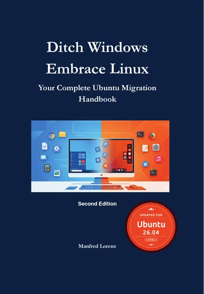
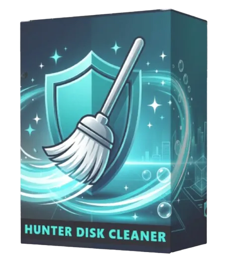

Ditch Windows, Embrace Linux: Ubuntu Switch Guide for Window
Product profile · Marketplace data 2026-10-09 · Sales-page research 2026-10-09 · Categories: Computer & Internet
- Ditch Windows, Embrace Linux: Ubuntu Switch Guide for Window is a e-books in Computer & Internet sold through the Digistore24 marketplace by vendor pvamaxfe8b, listed since 2026-09-25.
- List price $11.17; Digistore24 reports a 60% affiliate commission, — cart conversion and a — cancel rate for this offer.
- Affiliate earnings per sale: $6.70 (vendor-side statistic, not a forecast).
Interested in Ditch Windows, Embrace Linux: Ubuntu Switch Guide for Window? The current price, bonuses and guarantee terms live on the vendor's official page:
Check the official sales page
Affiliate link — we may earn a commission at no extra cost to you.

Marketplace record
| Product type | E-books |
|---|---|
| Price | $11.17 (Single payment) |
| Affiliate commission | 60% |
| Refund window | Per the vendor's sales page — check the official page before buying |
| Vendor | pvamaxfe8b (listed since 2026-09-25) |
| Marketplace stats* | Cart conversion — · cancel rate — · affiliate earnings/sale $6.70 |
* Vendor-side marketplace statistics reported by Digistore24; they depend on traffic quality and are not a forecast.
Vendor's marketplace description
Hands-on guide for switching from Windows to Ubuntu 26.04 LTS, for complete beginners. PDF with command poster and hardware guide, $9.99. Fits audiences whose PCs are too old for Windows 11, and Windows 10 updates now require ESU enrollment and end in October 2027, a timely hook. Banners, emails and posts: shop.code-content-ai.com/ditch-windows-embrace-linux/partners/
From the vendor's sales page
Page title: Ditch Windows, Embrace Linux: Your Complete Ubuntu Migration Guide | PDF Download
Meta description: The practical guide to a complete switch from Windows to Linux - no prior knowledge required. Current for Ubuntu 26.04 LTS. Instant PDF download.
Headline
Ditch Windows - Embrace Linux
Section headlines
- Windows is frustrating – but switching seems impossible
- Everything in one place—instead of twenty open browser tabs
- What's inside the book
- What awaits you after reading
- Who is this book for?
- Written by someone who lives it every day
- What readers of the first edition say
- Three free PDFs to get you started
- The Migration Checklist: Windows → Ubuntu
- Buy once. Use forever.
Opening copy
Your PC isn't too old. It just needs the right system. This book walks you step by step from Windows to Ubuntu 26.04, even if you've never opened a terminal.
★★★★★ "My biggest fear was the terminal. To my surprise, the book took exactly that fear away." Reader of the German 1st edition, 60+, switched after 30 years on Windows (Amazon.de review, translated)
For Beginners Sound familiar? Windows is frustrating – but switching seems impossible Many people have wanted to leave Windows for a long time. But then the doubts creep in. That's exactly what this book was written for.
Prices mentioned on the page: $9.99 · €12.99
CTA buttons: “Buy now & download instantly”
Research method: raw HTML fetch · 1826 words on page · quality: rich · researched 2026-10-09. Full research file (MD) ↗
How products like this are delivered
General note about this product type (not vendor-specific instructions): E-books on Digistore24 are delivered as a digital download (usually PDF/EPUB): right after checkout you get a download link or member-area access, and can read on any device. For the exact usage of Ditch Windows, Embrace Linux: Ubuntu Switch Guide for Window, the official sales page and included materials are the authoritative source.
Good to know
- No guarantee language found in our research of the sales page — confirm the refund window on the official page before you buy.
Frequently asked questions about Ditch Windows, Embrace Linux: Ubuntu Switch Guide for Window
What is Ditch Windows, Embrace Linux: Ubuntu Switch Guide for Window?
Ditch Windows, Embrace Linux: Ubuntu Switch Guide for Window is a e-books sold through the Digistore24 marketplace by vendor pvamaxfe8b, listed since 2026-09-25. It is filed under Computer & Internet. Digistore24 handles checkout, delivery and refunds for this product.
How much does Ditch Windows, Embrace Linux: Ubuntu Switch Guide for Window cost?
The Digistore24 marketplace lists it at $11.17 (single payment). Prices are set by the vendor and can change — the official sales page shows the current price.
Is there a money-back guarantee for Ditch Windows, Embrace Linux: Ubuntu Switch Guide for Window?
Our sales-page research did not find explicit guarantee language. Many Digistore24 products carry a 60-day money-back guarantee, but this is set per product by the vendor — confirm on the official sales page before buying.
Is Ditch Windows, Embrace Linux: Ubuntu Switch Guide for Window legit?
We don't rate legitimacy — we publish verifiable data instead: vendor pvamaxfe8b (listed on Digistore24 since 2026-09-25), cart conversion —, cancel rate —, affiliate earnings/sale $6.70 (all vendor-side marketplace statistics). Read our research standards before deciding, and judge with the numbers.
Where can I buy Ditch Windows, Embrace Linux: Ubuntu Switch Guide for Window safely?
Only through the official sales page linked on this site (checkout and refunds run via Digistore24). Verify the price and guarantee there before ordering. That link is an affiliate link — buying through it supports this site at no extra cost to you.
Related offers in Computer & Internet

#1 MAKE MONEY ONLINE WEBINAR ON DIGISTORE24 Top Converting Offer that converts all types of traffic - Biz Opp, Personal Development, IM, MMO like nuts. Make Up

50% Commission on a $47/month software Commisions are monthly recurring for life! The BEST AI YouTube software to grow a channel Used by top YouTubers, Feel GOO

NEW AI SEO Offer – Built for the ChatGPT Era FastSEOHub is a powerful AI SEO platform designed to optimize websites for modern AI search engines like ChatGPT &a
The Content Creation Conversation™ is a game-changing program for entrepreneurs, coaches, and content creators who want to create authentic content effortlessly
Same vendor on our German site
- Linux statt Windows: Umstiegs-Guide für Windows-10-Nutzer (P — $13.58 (Computer & Internet)
Same vendor, German-language marketplace listings.
Similar price range in Computer & Internet

Hunter Disk Cleaner is a modern, blazing-fast, and lightweight disk cleanup utility for Windows. Safely hunt down and remove hidden junk files to free up your c
Turn AI Into Your Next Income StreamDiscover step-by-step strategies to build profitable side hustles using Artificial Intelligence in 2025. This digital eBook
The intelligent prompt generator for perfect AI results Many people use AI tools like ChatGPT or DeepSeek – but few get truly excellent results. The reason is a
Related searches
Where to check it out
Read the vendor's full sales page (current price, guarantee terms and bonuses are listed there):
View official sales page
That link is an affiliate link — if you buy through it we earn a commission from the vendor at no extra cost to you.
Sources & further information
- Official sales page (current price, guarantee, bonuses): shop.code-content-ai.com/ditch-windows-embrace-linux (affiliate link)
- Public Digistore24 product page: digistore24.com/product/701228
- Full research file (Markdown, versioned): content/products/59709-ditch-windows-embrace-linux-ubuntu-switch-guide-for-window.md
- Vendor's affiliate support page: shop.code-content-ai.com/ditch-windows-embrace-linux/partner
- Marketplace category: Computer & Internet
How we evaluate products like Ditch Windows, Embrace Linux: Ubuntu Switch Guide for Window
Six checks, all on official marketplace numbers — earnings/sale ÷ cancel-rate skepticism × funnel fit. Read the full evaluation method · our research standards & labeling.
function interactionBlock(p) { const q = encodeURIComponent(p.label); const mail = encodeURIComponent("Correction: " + p.label); return `Questions, or own experience with ${esc(p.label)}?
We publish hands-on reviews only after buying a product ourselves — but your experience helps other readers: start or join the discussion about ${esc(p.label)} on GitHub. Found a wrong number? Report a correction — every page shows its data dates, and corrections are applied to the whole site.
`; }